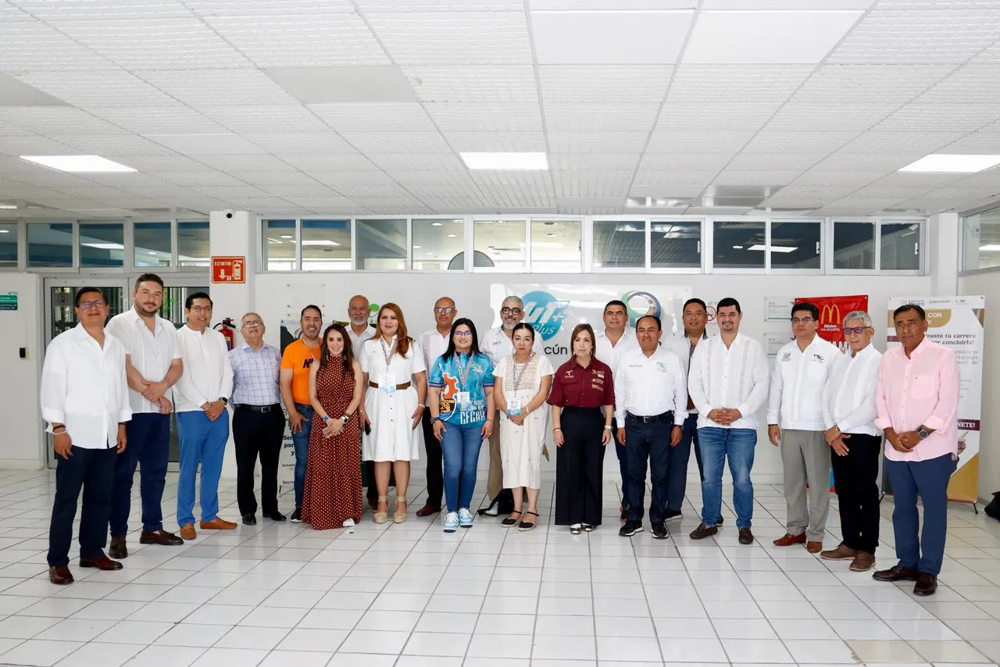
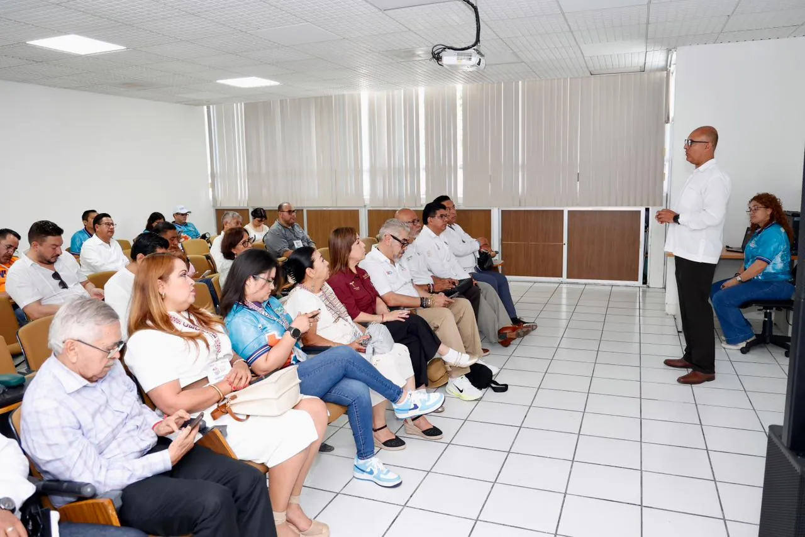

La Paz, Baja California Sur, a 22 de mayo de 2026


En el marco del Festival Académico Nacional 2026, se llevó a cabo la Reunión Nacional de Directoras y Directores Generales de los Organismos Descentralizados Estatales de los CECyTEs, convocada por el Coordinador Nacional Iván Flores Benítez, donde se analizaron temas estratégicos para fortalecer la Educación Media Superior Tecnológica en el país.
Durante esta importante reunión nacional, en la que participó el Director General del CECyTEBCS, Lic. Vladimir Torres Navarro, se revisaron los avances en materia de certificación de estándares de competencia laboral para alumnas y alumnos, una estrategia que busca fortalecer la preparación académica y profesional del estudiantado mediante herramientas que amplíen sus oportunidades de desarrollo y empleabilidad.
En este rubro, Baja California Sur se posiciona entre las tres entidades con mayor avance a nivel nacional, logrando la reactivación de la entidad certificadora, instructora y evaluadora, así como la autorización de estándares de competencias laborales para docentes y nuestro estudiantado.
Asimismo, se intercambiaron experiencias para continuar fortaleciendo la vinculación con la iniciativa privada, con el propósito de mantener actualizadas las carreras técnicas, atender las necesidades del sector productivo y generar mayores espacios para prácticas profesionales y formación integral de las y los jóvenes.
De igual forma, durante la reunión se abordaron temas relacionados con la organización de los próximos eventos nacionales que fortalecen la formación integral de las y los estudiantes, entre ellos el Encuentro Nacional de Arte y Cultura, el Concurso Nacional de Creatividad e Innovación Tecnológica, el Encuentro Deportivo Nacional y el Festival Académico Nacional, donde se revisaron estrategias de planeación, organización y futuras sedes, con el propósito de continuar impulsando espacios que promuevan el talento, la creatividad, el deporte y el desarrollo académico de la comunidad estudiantil de los CECyTEs del país.
Al respecto, el Director General del CECyTEBCS, Lic. Vladimir Torres Navarro, destacó que el fortalecimiento de la certificación y la vinculación institucional representa una oportunidad para seguir transformando la educación que reciben las juventudes sudcalifornianas.
«Nos interesa que nuestras alumnas y alumnos egresen con mayores herramientas para enfrentar los retos actuales del mundo laboral, mediante el fortalecimiento de las competencias, su formación integral así como con el sector productivo, para que tengan mejores oportunidades. Así seguiremos trabajando para ofrecer una formación pertinente, actualizada acorde a las demandas de nuestra entidad», expresó el Lic. Vladimir Torres Navarro.
#CECyTEBCS #ComunidadCECyTE #BajaCaliforniaSur #CertificacionLaboral #FestivalAcademico2026